측량및지형공간정보기사 (2012-03-04 기출문제)
1과목: 측지학 및 위성측위시스템
1. 지구를 반지름 R=6400km의 구라 하고 거리의 허용오차가 1/10 이라면 반지름 몇 km까지를 평면으로 가정할 수 있는가?
- 약 35km
- 약 70km
- 약 140km
- 약 210km
(정답률: 72%)

2. 천문측량에서 항성의 위치오차의 원인이 아닌 것은?
- 세차운동
- 장동
- 광행차
- 국심변화
(정답률: 71%)
3. 지구면 위의 두 점간 최단거리선으로 지심과 지표상의 두점을 포함하는 평면과 지표면의 교선은?
- 자오선
- 측량선
- 측지선
- 항정선
(정답률: 86%)
4. 우리나라의 직각좌표계에서 사용하고 있는 지도 투영법은?
- TM(Transverse Mercator) 투영
- 람베르트 정각원추 투영
- 카시니 투영
- 심사 투영
(정답률: 92%)
5. 지구의 적도 반지름 a=6378km, 극반지름 b=6356km라고 할 때 지구의 편평율은?
- 1/270
- 1/280
- 1/290
- 1/310
(정답률: 82%)
6. 다음 중 중력측정을 하여 지질구조를 찾는데 꼭 필요한 과정은?
- 측정 중력을 평균해수면에서의 중력으로 보정해야 한다.
- 측정 중력을 위도에 따른 표면장력으로 환산해야 한다.
- 측정 중력을 보정 없이 그대로 사용한다.
- 측정 중력은 지표면 식생상태를 고려하여야 한다.
(정답률: 79%)
7. GPS 수신기에 의해 구해지는 높이 값은?
- 지오이드고
- 정표고
- 역표고
- 타원체고
(정답률: 76%)
8. 측지학에서 다루는 범위에 해당되지 않는 것은?
- 지구의 형상 결정
- 지구의 중력장 결정
- 지구의 화학적 성분 결정
- 지표면상의 임의 정의 위치 결정
(정답률: 92%)
9. 지자기측량에 대한 설명 중 옳지 않은 것은?
- 편각이란 지자기의 방향과 자오선이 이루는 각이다.
- 복각이란 지자기의 방향과 수평면이 이루는 각이다.
- 수평분력이란 지자기의 수평면에 대한 성분이다.
- 지자기의 강도는 위도가 낮을수록 커진다.
(정답률: 68%)
10. GPS 측량시 고려해야 할 사항에 대한 설명으로 옳지 않은 것은?
- 3차원 위치결정을 위해서는 4개 이상의 위성신호를 관측하여야 한다.
- 임계 고도각(앙각)은 15도 이상을 유지하는 것이 좋다.
- DOP 값이 3이하인 경우는 관측을 하지 않는 것이 좋다.
- 철탑이나 대형 구조물, 고압선의 아래 지점에서는 관측을 피하여야 한다.
(정답률: 82%)
11. GPS에 의한 위치결정에 있어서 가장 중요한 관측요소로 옳은 것은?
- 위성과 수신기 사이의 거리
- 위성신호의 전송데이터 량
- 위성과 수신기 사이의 각
- 위성과 수신기의 안테나 길이
(정답률: 79%)
12. DGPS 측량방법을 사용하는 이유에 대한 설명으로 옳은 것은?
- 단독(절대)측위 보다 빠른 계산을 위하여
- 단독(절대)측위 보다 연속적인 위치 계산을 위하여
- 단독(절대)측위 보다 정확한 위치를 계산하기 위하여
- 단독(절대)측위 보다 실내측위 적용성 향상을 위하여
(정답률: 83%)
13. 물리측지에 대한 설명으로 옳지 않은 것은?
- 중력은 만유인력에 의한 지구의 인력과 지구 자체에 의한 원심력 벡터의 합력이며 방향은 연직방향이다.
- 지구의 형상은 중력과 밀접한 관계가 있으며 적도에 가까울수록 중력은 증가한다.
- 지하에 밀도가 큰 물질이 있는 경우에 중력이상이 정(+)으로 나타난다.
- 중력의 단위로 gal이 사용된다.
(정답률: 89%)
14. 케플러의 기본궤도요소가 아닌 것은?
- 궤도경사각
- 궤도장반경
- 타원의 이심률
- 만유인력상수
(정답률: 63%)
15. 탄성파 측정에 대한 설명 중 틀린 것은?
- 굴절법은 지표면으로부터 낮은 곳을 대상으로 한다.
- 반사법은 지표면으로부터 깊은 곳을 대상으로 한다.
- 외핵과 내핵의 경계를 알아내기 위하여 반사법을 이용한다.
- 단층과 같은 지질 구조는 탄성파 측량에 의해 알아낼 수 있다.
(정답률: 76%)
16. 구과량(A)와 구면삼각형 면적(B)의 관계로 옳은 것은? (단, α는 비례상수)
- A = α√B
- A = α∙B
- A = α/B
- A = α∙B2
(정답률: 77%)
17. GPS 관측계획 수립 시 고려해야 할 사항 중 틀린 것은?
- 보유 수신기 대수
- 동원 가능한 인원
- 관측시간
- 위성궤도력
(정답률: 40%)
18. GPS수신기의 기종은 달라도 수신된 관측자료를 기종에 관계없이 공통의 형식(format)으로 변환시켜 사용하는 자료 형식을 무엇이라고 하는가?
- IONEX
- RINEX
- SINEX
- RTCM
(정답률: 85%)
19. GPS 오차원인 중 L1신호와 L2신호의 굴절 비율의 상이함을 이용하여 L1 /L2의 선형 조합을 통해 보정이 가능한 것은?
- 전리층 오차
- 위성시계오차
- GPS 안테나의 구심오차
- 다중전파경로(멀티패스)
(정답률: 81%)
20. 지각 변동/운동의 결정과 같이 정밀한 위치결정을 하기 위하여 GPS를 이용하는 경우에 대한 설명으로 틀린 것은?
- 오차를 제거하기 위하여 일반적으로 차분된 관측치를 사용한다.
- 정밀한 위치를 결정하여야 하므로 코드 신호를 사용한다.
- 사용보다는 학술용 자료처리 프로그램을 사용한다.
- 정확한 궤도정보인 정밀 궤도력을 사용한다.
(정답률: 65%)
2과목: 응용측량
21. 댐 위부의 변형관측에 정확도가 낮아 적합하지 못한 것은?
- 삼변삼각측량
- 평판수준측량
- 지상사진측량
- 직접수준측량
(정답률: 76%)
22. 도로의 경관 계획 시 고려사항이 아닌 것은?
- 자연환경의 손상을 최대한 억제하도록 한다.
- 도로선형의 부드러움을 위채 곡선을 많이 삽입한다.
- 지역 경관과의 조화를 이루도록 한다.
- 내부경관과 외부경관을 동시에 고려하여야 한다.
(정답률: 74%)
23. 그림과 같은 구릉지가 있다. 간격 5m의 등고선에 쌓인 부분의 단면적이 A1=3800m2, A2=2000m2, A3=1800m2, A4=900m2, A5=200m2라고 할 때 각주공식에 의한 이 구릉지의 토량은? (단, 정상은 편평한 것으로 가정한다.)
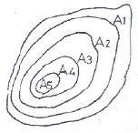
- 56000m3
- 48000m3
- 38000m3
- 32000m3
(정답률: 69%)
24. 완화곡선에 사용하는 클로소이드에 대한 설명으로 틀린 것은?
- 클로소이드는 곡률이 곡선길이에 비례하여 증대하는 곡선이다.
- 클로소이드의 요소는 모두 무차원이다.
- 클로소이드의 종점 좌표(x, y)는 그 점의 접선각(r)의 함수로 표시할 수 있다.
- 클로소이드 곡선길이(L)와 곡선의 반지름(R), 매개변수(A)는 R×L=A2의 관계를 갖는다.
(정답률: 55%)
25. 그림과 같이 터널에서 직접 수준측량을 하였을 때 B점의 지반고 HB를 구하는 식으로 옳은 것은? (단, HA는 기지점 A의 지반고이다.)
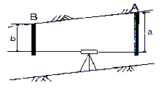
- HB=HA-a+b
- HB=HA+a-b
- HB=HA+a+b
- HB=HA-a-b
(정답률: 60%)
26. 노선의 종단면도에 계획선을 계획할 때 고려하여야 할 사항에 대한 설명으로 옳지 않은 것은?
- 계획경사는 될 수 있는 데로 요구에 합치시킨다.
- 경사와 곡선을 가능한 병설 한다.
- 절토는 성토와 대략 같게 되도록 한다.
- 절토는 성토로 유용할 수 있도록 운반거리를 고려한다.
(정답률: 70%)
27. 완화곡선의 종류가 아닌 것은?
- 3차포물선 곡선
- 클로소이드 곡선
- 렘니스케이트 곡선
- 반향곡선
(정답률: 53%)
28. 단곡선 설치에 있어 도로기점으로부터 교점(I. P)까지의 거리가 515.32m, 곡선반지름이 300m, 교각이 31° 00′ 일 때 시단현에 대한 편각은? (단, 중심말뚝의 간격은 20m 이다.)
- 30′ 03″
- 38′ 43″
- 45′ 08″
- 48′ 01″
(정답률: 59%)
29. 해양측량에 대한 설명으로 옳지 않은 것은?
- 해면은 지오이드면과 상당한 차이가 있으며, 지오이드면 외측에 있는 질량의 영향을 고려해야 한다.
- 해양측량 관측의 정밀도는 일반적으로 육상측량 관측의 경우에 비하여 나쁘다.
- 해양측량에서는 연직 또는 수평방향의 유지가 중요한 문제이다.
- 선상에서 연직추를 늘어뜨리면 배의 동요에 의한 수평가속도의 영향 때문에 실의 방향이 정확한 연직방향을 가리키지 못한다.
(정답률: 45%)
30. 수위관측소의 설치 장소 선정을 위한 고려사항으로 옳지 않은 것은?
- 상, 하류 최소 100m 정도 곡선이 유지되는 장소
- 수위가 교각 및 그 밖의 구조물로 영향을 받지 않는 곳
- 홍수시 유실 또는 이동의 염려가 없는 곳
- 평상시는 물론 홍수시에도 쉽게 양수표를 읽을 수있는 장소
(정답률: 68%)
31. 각 구간의 평균유속이 표와 같을 때, 그림과 같은 단면을 갖는 하천의 유량은?
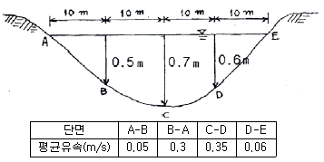
- 4.38m3/sec
- 4.83m3/sec
- 5.38m3/sec
- 5.83m3/sec
(정답률: 54%)
32. 그림과 같이 곡선과 직선인 경계선에 쌓여 있는 면적을 심프슨(Simpson)의 제1법칙으로 구한 값은? (단, h0=3.2m, h1=10.4m, h2=12.8m, h3=11.2m, h4=4.4m이고 지거의 간격 d=5m이다.)
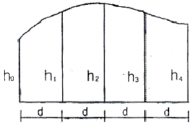
- 190m
- 194m
- 197m
- 199m
(정답률: 70%)
33. 터널측량에 대한 설명으로 옳지 않은 것은?
- 터널 내의 곡선설치는 일반적으로 지상에서와 같이 편각법에 의해 행한다.
- 지하측량에는 지하중심측량과 지하수준측량으로 나눌 수 있다.
- 터널의 길이방향은 삼각측량 또는 트래버스측량으로 행한다.
- 터널 내 측량에서는 기계의 십자선 및 잣눈 표척등에 조명이 필요하다.
(정답률: 63%)
34. 하천의 유속측정에 있어서 수면으로부터 수심(H)의 0.2H, 0.6H, 0.8H인 지점의 유속이 0.541m/sec, 0.417m/sec, 0.355m/sec일 때 2점법으로 구한 평균 유속은?
- 0.479m/sec
- 0.448m/sec
- 0.433m/sec
- 0.386m/sec
(정답률: 65%)
35. 터널 내에서 기준점으로 사용되는 중심말뚝으로 차량 등에 파손되지 않도록 견고하게 설치하는 것은?
- 스터럽(stirrup)
- 도벨(dowel)
- 쇼란(shoran)
- 양수표(water gauge)
(정답률: 70%)
36. 2500m2 의 정사각형 면적을 0.2m2까지 정확히 구하기 위한 필요충분한 한 번의 측정거리 단위는?
- 2mm
- 4mm
- 5mm
- 10mm
(정답률: 37%)
37. 단곡선 설치시 곡선반지름 R=300m, 교각 I=80°일 때 접선길이(T.L.)는?
- 357.5m
- 300.1m
- 251.7m
- 210.1m
(정답률: 63%)
38. 신설도로의 구간 No.10에서 No. 10+10m 사이에 성토고 1m, 성토기울기 1:1.5, 도로폭 20m의 도로를 건설하고자 할 때 토공량은?
- 207m3
- 215m3
- 414m3
- 430m3
(정답률: 62%)
39. 그림과 같이 R=150m, I=85° 인 원곡선의 곡선시점 A와 교각의 크기를 유지(I=I′)한 상태에서 교점(P′)을 접선 AP를 따라 20m 이동하여 노선을 변경하고자할 때, 새로운 원곡선의 반지름 R′ 은?
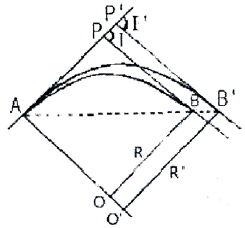
- 171.9m
- 200.4m
- 226.1m
- 232.3m
(정답률: 70%)
40. 하천측량의 일반적인 측량범위에 대한 설명으로 옳지 않은 것은?
- 제방이 없는 하천의 경우는 과거 홍수에 영향을 받았던 구역보다 약간 좁게 한다.
- 제방이 있는 경우는 제외지 전부와 제내지 300m이내로 한다.
- 종방향 범위는 하류의 경우에는 바다와 접하는 하구까지로 한다.
- 종방향 범위의 상류는 홍수피해가 미치는 지점까지 또는 수원지까지 측량한다.
(정답률: 54%)
3과목: 사진측량 및 원격탐사
41. 위성영상처리 과정 중 전처리(preprocessing)에 속하는 것은?
- 수치지형모델(DTM) 생성 및 지도제작
- 영상분류(image classification)와 판독
- 방사보정(또는 복사보정)과 기하보정
- 영상자료 전송 및 압축
(정답률: 67%)
42. 사진축척 1:20000, 사진의 크기 23cm × 23cm인 항공사진의 사진 한 장에 포괄되는 실제 면적은?
- 5.29kkm2
- 10.58km2
- 21.16km2
- 52.9km2
(정답률: 64%)
43. 단사진으로부터 기복변위 공식을 적용하여 건물의 높이를 구할 수 있는 조건으로 옳은 것은?
- 칼라 필름으로 촬영한 경우
- 수직으로 촬영한 경우
- 건물의 그림자가 있는 경우
- 광각사진기로 촬영한 경우
(정답률: 57%)
44. 항공삼각측량에서 절대 좌표로 환산할 때 계산단위가 되는 사진, 입체모형, 스트립에 따라서 조정 방법을 분류할 수 있다. 이 중 사진을 기본 단위로 조정하는 방법은?
- 독립모델법(independent model triangulation)
- 광속조정법(bundle adjustment)
- 다항식법(polynomial method)
- 템플리트법(templet method)
(정답률: 50%)
45. 영상정합방법의 분류에 속하지 않는 것은?
- 축척기반정합
- 형상기준정합
- 관계형정합
- 영역기준정합
(정답률: 24%)
46. 사진 축척을 결정하기 위하여 사진 주점을 지나는 직선상에 2점 A, B를 택하였다. 사진 상에서 A, B의 길이가 16cm이고 축척 1:10000 지형도에서는 20cm이었다. 이때 사진 축척은?
- 1:10000
- 1:12500
- 1:15000
- 1:17500
(정답률: 37%)
47. 초점거리 15.3cm의 카메라로 촬영된 연직사진의 평지 사진축척은 1:25000 이었다. 주점으로부터의 거리가 60.4mm인 곳의 평지로부터의 비고 300m에 의한 기복변위는?
- 약 4.7mm
- 약 5.0mm
- 약 5.3mm
- 약 5.7mm
(정답률: 59%)
48. 수치정사영상(digital ortho image)을 제작하기 위해 직접적으로 필요한 자료가 아닌 것은?
- 수치지도
- 수치표고모델(DEM)
- 외부표정요소
- 촬영된 원래 영상
(정답률: 73%)
49. 입체시된 항공사진상에서 지형의 과고감에 대한 설명으로 옳은 것은?
- 실제와 동일하게 나타난다.
- 입체경의 조율에 따라 다르다.
- 실제 과고감보다 과소하게 나타난다.
- 실제 과고감보다 과대하게 나타난다.
(정답률: 68%)
50. 원격탐사에 사용되는 센서 중 수동형 센서(Passive Sensor)에 해당되는 것은?
- 레이저 스캐너(Laser scanner)
- 다중분광스캐너(Multispectral scanner)
- 레이더 고도계(Radar altimeter)
- 영상 레이더(SLAR)
(정답률: 60%)
51. 촬영시 사진의 기하학적 상태를 재현하기 위하여 표정을 하는데 이 과정에 대한 설명으로 옳지 않은 것은?
- 내부표정은 사진의 주점과 추점거리를 조정하는 작업이다.
- 상호표정은 입체모델의 종시차를 수거시키는 작업이다.
- 절대표정은 축척과 경사, 위치 등을 바로잡는 과정이다.
- 접합표정은 한 개, 한 개의 사진만을 접합하는 작업이다.
(정답률: 63%)
52. 위성영상 중 지표면의 온도분포를 분석할 수 있는 것은?
- Landsat 위성의 TM 영상
- Landsat 위성의 RBV 영상
- SPOT 위성의 HRV 영상
- 아리랑 위성의 EOC 영상
(정답률: 52%)
53. Pushbroom 방식의 선형 CCD 소자를 사용하는 항공 디지털 카메라의 특징에 대한 설명으로 옳지 않은 것은?
- 라인 별로 외부표정요소를 결정해야 하므로 GPS/INS 장비가 보완 운영된다.
- 촬영방향에 대한 직각방향인 연직라인은 평행투영으로 투영왜곡이 없어 정사영상 보정이 필요 없다.
- 스트립 방식의 연속적인 촬영으로 촬영방향으로의 영상간 인접을 고려할 필요가 없다.
- 종중복도 100%의 입체영상 취득이 가능하다.
(정답률: 60%)
54. 초점거리 120mm인 사진기로 촬영고도 2400m에서 종중복도 60%, 횡중복도 30%로 가로 30km, 세로 25km인 지역을 촬영하려고 한다. 사진의 크기는 23cm×23cm 일 때 입체모델의 수는?(단, 촬영은 가로 방향으로 한다.)
- 112매
- 127매
- 128매
- 136매
(정답률: 49%)
55. 항공사진 촬영성과 중 재촬영하지 않아도 되는 것은?
- 항공기의 고도가 계획촬영고도를 10% 벗어날 때
- 인접 코스 간의 중복도가 표고의 최고점에서 3%일 때
- 촬영 진행방향의 중복도가 53% 미만인 경우가 전코스 사진매수의 1/2 일 때
- 디지털항공사진 카메라의 경우 촬영코스 당 지상표 본거리가 당초 계획하였던 목표 값보다 큰 값이 20% 발생했을 때
(정답률: 24%)
56. 원격탐사의 자료변환 시스템에 있어서 기하학적인 오차나 왜곡의 원인이 아닌 것은?
- 센서의 기하학적 특성에 기인한 오차
- 인공위성의 크기에 기인한 오차
- 플랫폼의 자세에 기인한 오차
- 지표의 기본에 기인한 오차
(정답률: 69%)
57. 영상을 모자이크할 경우에 모자이크된 영상 내에서 경계선이 보이게 된다. 이 경계선을 중심으로 일정한 폭을 설정하여 영상을 부드럽게 처리할 수 있는 방법은?
- 영상 와핑(image warping)
- 영상 페더링(image feathering)
- 영상 스트레칭(image stretching)
- 히스토그램 평활화(histogram equalization)
(정답률: 65%)
58. 원격 탐사(Remote sensing)에 대한 설명 중 옳지 않은 것은?
- 자료가 대단히 많으며 불필요한 자료가 포함되는 경우가 있다.
- 물체의 반사 스펙트럼 특성을 이용하여 대상물의 정보 추출이 가능하다.
- 고고도에서 좁은 시야각에 의하여 촬영되므로 중심 투영에 가까운 영상이 촬영된다.
- 자료 최득 방법에 따라 수동적 센서에 의한 것과 능동적 센서에 의한 방법으로 분류할 수 있다.
(정답률: 71%)
59. 입체사진 촬영 시 중복지역을 증가시킬 수 있는 방법이 아닌 것은?
- 보통각렌즈 대신 광각렌즈를 사용한다.
- 촬영시간 간격을 짧게 한다.
- 비행속도를 느리게 한다.
- 촬영고도를 낮춘다.
(정답률: 53%)
60. GPS/INS 통합시스템에 대한 설명으로 옳은 것은?
- GPS/INS는 가상 기준점을 이용한 GPS 측량 기법이다.
- GPS/INS를 이용하면 항공기에서 중력이상을 측정할 수 있다.
- GPS/INS는 항공기에서 직접 수치표고도모델을 생성하는 장비이다.
- GPS/INS를 이용하면 항공사진측량에서 지상기준점측량 비용을 절감할 수 있다.
(정답률: 52%)
4과목: 지리정보시스템
61. GIS 데이터의 속성 테이블에서 공간객체 인스턴트(예로, 지적도에서 하나의 필지)를 설명하는 것은?
- 필드
- 레코드
- 키
- 행
(정답률: 44%)
62. 국가공간정보기반(NSDI)의 구성 요소가 아닌 것은?
- 파트너쉽
- 표준
- 프레임워크 데이터
- 공간분석기법
(정답률: 30%)
63. 도시지역의 인구, 건물면적, 지명 등과 같이 숫자나 문자로 표시되는 속성정보와 지형, 행정경계, 도로등과 같이 지도나 도면에 의해 표시되는 정보를 체계적으로 관리함으로서, 시정업무를 효율적으로 지원할수 있는 기능과 소프트웨어를 갖춘 정보체계를 무엇이 라고 하는가?
- LIS(land information system)
- UIS(urban information system)
- MIS(map information system)
- DIS(disaster information system)
(정답률: 63%)
64. GIS에 대한 설명으로 옳지 않은 것은?
- 공간요소에 연계된 속성정보로 구축되었다.
- 저장, 갱신, 관리, 분석 및 출력이 가능하도록 된체계이다.
- 공간적으로 배열된 형태의 자료를 처리한다.
- 일반적으로 숫자나 문자를 처리하는 정보시스템이다.
(정답률: 61%)
65. 객체지향형 데이터베이스관리시스템의 특징이 아닌 것은?
- 자료의 갱신이 용이하다.
- 자료뿐만 아니라 자료의 구성을 위한 방법론도 저장이 가능하다.
- 지도의 정보를 도형과 속성으로 나누어 유형별로 이블에 저장한다.
- 객체는 독립된 동질성을 가진 개체이며, 상속성을 갖는다.
(정답률: 45%)
66. 도형자료 중 래스터(raster)형태의 특징으로 옳지 않은 것은?
- 자료의 데이터구조가 매우 복잡하며, 자료생성이 어렵다.
- 다양한 공간적 편의가 격자형태로 나타나며, 자료의 조작 과정이 용이하다.
- 격자의 크기 조절로 자료용량의 조절이 가능하다.
- 래스터자료는 주로 네모난 형태를 가지기 때문에 벡터자료에 비해 미관상 매끄럽지 못하다.
(정답률: 61%)
67. 그림은 6×6화소 크기의 래스터 데이터를 수치적으로 표현한 것이다. 이 데이터를 2×2화소 크기의 데이터로 영상재배열(resampling) 하고자 한다. 2×2화소 데이터의 수치값을 결정하는 방법으로 중앙값 방법(Median Method)을 사용하고자 할 때 결과로 옳은 것은?
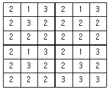
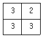
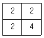
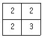
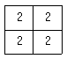
(정답률: 74%)
68. 래스터 자료의 보간법 중 최근린보간법(nearestneighbor)에 대한 설명으로 틀린 것은?
- 자료값 중 최대값과 최소값이 손실되지 않는다.
- 다른 보간법에 비해 계산속도가 빠르다.
- 원래의 자료값을 평균하거나 변환하지 않고 그대로 이용한다.
- 가장 가까운 4개의 기지값의 거리에 따라 경중률을 계산한다.
(정답률: 39%)
69. 복합 조건문(composite selection)으로 공간자료를 선택하고자 할 때, 다음 중 어떠한 경우에도 가장 많은 결과가 선택되는 것은? (단, 각 항목은 0이 아님)
- (Area<400,000 AND (LandUse=80 AND AdminCode=12))
- (Area<400,000 OR (LandUse=80 OR AdminCode=12))
- (Area<400,000 AND (LandUse=80 OR AdminCode=12))
- (Area<400,000 OR (LandUse=80 AND AdminCode=12))
(정답률: 65%)
70. 내비게이션의 최적경로를 계산하거나, 가스나 상하수도 관망 등과 같은 선형 개체의 부하 예측을 하기위해 필요한 GIS의 분석 기법은?
- 버퍼링 분석
- 네트워크 분석
- 공간질의
- 입지 분석
(정답률: 47%)
71. 지도투영은 지구의 둥근 표면 전체 또는 일부분을 평면상에 나타내는 것으로 여러 투영법이 개발되었다. 만약 주어진 수치지도의 좌표계가 UTM(Universal Transverse Mercator) 이라면, 이 수치지도의 좌표단위는?
- 인치
- 센치미터
- 피트
- 미터
(정답률: 79%)
72. 다음 중 DBMS의 기본적인 기능과 거리가 먼 것은?
- 정밀한 그래픽 생성
- 효율적인 데이터 저장
- 대용량 데이터 관리
- 신속한 데이터 검색
(정답률: 75%)
73. 두 격자자료의 입력값이 각각 0과 1일 때, 각 논리연산자 AND, OR, XOR에 의한 결과는? (단, AND, OR, XOR 의 순서이고 참일 때 1이고 거짓일 때 0 이다.)
- 1-0-1
- 1-1-0
- 0-1-0
- 0-1-1
(정답률: 49%)
74. 보기의 ( )안에 들어갈 용어로 적합한 것은?
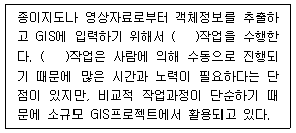
- 스캐닝(scanning)
- GPS(global positioning system)
- 원격탐사(remote sensing)
- 디지타이징(digitizing)
(정답률: 62%)
75. 데이터모텔을 이용하여 필요한 자료를 추출하고 앞으로의 현상을 예측하거나 계획된 행위에 대한 결과를 예측하는 것을 무엇이라 하는가?
- 검색
- 변환
- 출력
- 모델링
(정답률: 71%)
76. ‘수치지도 작성의 기준시점은 원시자료 또는 조사자료의 취득시점과 일치하여야 한다.’는 지리정보 품질요소 중 어느 항목에 대한 설명인가?
- 정보의 완전성
- 논리적 일관성
- 시간정확도
- 주제정확도
(정답률: 59%)
77. 래스터 자료의 압축방법이 아닌 것은?
- 체인코드(Chain Code)
- 포인트코드(Point Code)
- 런 렝스코드(Run-Length Code)
- 블록코드(Block Code)
(정답률: 56%)
78. 아래와 같은 데이터를 등빈도(quantile) 방법을 이용하여 4개의 그룹으로 분류한 결과로 옳은 것은?
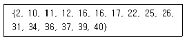
- {2, 10}, {11, 12, 16, 16, 17},{22, 25, 26}, {31, 34, 36, 37, 39, 40}
- {2, 10 }, {11, 12}, {16, 16}, {17, 22, 25, 26, 31, 34, 36, 37, 39, 40}
- {2, 10, 11, 12}, {16, 16, 17, 22}, {25, 26, 31, 34}, {36, 37, 39, 40}
- {2, 10}, {11, 12, 16}, {16, 17, 22, 25}, {26, 31, 34, 36, 37, 39, 40}
(정답률: 58%)
79. 지형공간정보체계의 일반적인 단계를 순서대로 바르게 표시한 것은?
- 자료의 수치화-자료조작 및 관리-응용분석-출력
- 자료조작 및 관리-자료의 수치화-응용분석-출력
- 자료의 수치화-응용분석-자료조작 및 관리-출력
- 자료조작 및 관리-응용분석-자료의 수치화-출력
(정답률: 63%)
80. 불규칙 삼각망을 이용하여 수치지형을 표현하는 모델은?
- DEM
- TIN
- DTM
- DSM
(정답률: 71%)
5과목: 측량학
81. 직접 수준측량에 있어서 전시와 후시의 시준거리를 같게 하는 이유로 거리가 먼 것은?
- 시준선이 기포관축과 평행하지 않는 경우의 오차가 소거된다.
- 지구의 곡률오차가 소거된다.
- 빛의 굴절오차가 소거된다.
- 연직축 오차가 소거된다.
(정답률: 45%)
82. 트래버스 측량에서 폐합오차를 분배하는 컴퍼스법칙과 트랜싯 법칙에 대한 설명으로 옳지 않은 것은?
- 컴퍼스 법칙은 거리의 정도와 각 관측의 정밀도가 거의 같을 경우에 사용된다.
- 컴퍼스 법칙은 각 측선의 길이에 비례하여 배분하는 방법이다.
- 트랜싯 법칙은 거리의 오차를 평균 배분하는 방법이다.
- 트랜싯 법칙은 각 측량의 정밀도가 거리 측량의 정밀도 보다 좋을 경우에 이용된다.
(정답률: 48%)
83. 교호 수준측량 결과에 따른 B점의 표고는? (단, A점의 표고는 100.000m 이고, a1=2.214m, a2=4.324m, b1=1.678m, b2=3.860m, d1=d2)
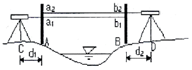
- 100.450m
- 100.500m
- 101.000m
- 101.500m
(정답률: 53%)
84. 평탄한 지역에서 9변형의 트래버스 측량을 행하여 2‘40″의 측각오차가 있었다. 이 오차의 처리방법으로 옳은 것은? (단, 평탄지의 폐합오차를 60″√n으로 본다.)
- 오차가 너무 크므로 재촉한다.
- 각각의 각(角)에 등분으로 배분한다.
- 각각의 변에 비례하여 배분한다.
- 각각의 각의 크기에 비례하여 배분한다.
(정답률: 56%)
85. 그림과 같이 관측된 거리를 최소제곱법으로 조정하기 위한 관측방정식을 행렬로 표시한 것으로 옳은 것은?
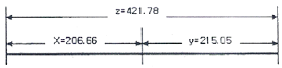
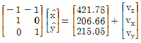
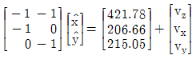
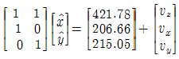
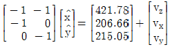
(정답률: 49%)
86. 삼각망 구성에 있어서 가장 정밀도가 높은 삼각망은?
- 유심 삼각망
- 사변형 삼각망
- 단열 삼각망
- 종합 삼각망
(정답률: 68%)
87. 광파거리측량기에 대한 설명으로서 옳지 않은 것은?
- 광파거리측량기는 인바(Invar)척에 비하여 기복이 많은 지역의 거리관측에 유리하다.
- 광파거리측량기의 변조주파수의 변화에 따라 생기는 오차는 관측거리에 비례한다.
- 광파거리측량기의 변조파장이 긴 것은 짧은 것에 비하여 정확도가 높다.
- 광파거리측량기의 정수는 비교기선장에서 비교측량하여 구한다.
(정답률: 50%)
88. A점에서 2km 떨어져 있는 B점을 관측할 때 각도에 20″의 각 오차가 있다면 B점에서의 위치오차는?
- 약 20cm
- 약 5cm
- 약 2cm
- 약 0.5cm
(정답률: 45%)
89. 등고선의 특성에 관한 설명으로 옳은 것은?
- 최대 경사선은 등고선과 직각 방향이다.
- 높이가 다른 등고선은 어떠한 경우에도 겹치지 않는다.
- 등고선은 지도 안에서 폐합되지 않으면 지도의 밖에서도 만나지 않는다.
- 등고선의 간격이 넓은 수록 급한 경사를 이룬다.
(정답률: 46%)
90. 축척 1:25000 지형도 상의 인접한 두 주곡선 사이의 수평거리가 8mm 이었다면 두 지점간의 기울기는?
- 5%
- 8%
- 10%
- 20%
(정답률: 46%)
91. 삼각점의 선정시 주의하여야 할 사항으로 옳지 않은 것은?
- 견고한 지반에 설치하여 이동, 침하 등이 없도록 한다.
- 삼각점 상호간에 시준이 잘 되어야 한다.
- 삼각형은 가능한 정삼각형에 가깝도록 하는 것이 좋다.
- 가능한 측점 수를 많게 하여 후속 측량의 활용도를 높인다.
(정답률: 64%)
92. 정방형 토지의 면적을 구하기 위하여 30m 줄자로 변의 길이를 관측하고 면적을 계산한 결과 1024m2 이었다. 그러나 줄자가 기준자와 비교하여 3cm 늘어나 있었다면 이 토지의 실제 면적은?
- 1025.0m2
- 1026.⑤m2
- 1027.⑤m2
- 1028.⑤m2
(정답률: 47%)
93. 축척 1:50000 지형도에서 두 점의 거리가 8.0cm이었고 축척을 모르는 다른 지형도상에서 동일한 두점 간의 거리가 57.1cm 라고 한다면 이 지형도의 축척은?
- 약 1:5000
- 약 1:7000
- 약 1:10000
- 약 1:14000
(정답률: 56%)
94. 1회 관측에서 ±2mm의 우연오차가 발생하였다면 4회 관측하였을 때의 우연오차는?
- ±2.0mm
- ±3.0mm
- ±4.0mm
- ±8.0mm
(정답률: 49%)
95. 공공측량의 실시에 대한 설명으로 옳은 것은?
- 기본측량성과만을 기초로 실시한다.
- 기본측량성과나 일반측량성과를 기초로 실시한다.
- 기본측량성과나 다른 공공측량성과를 기초로 실시한다.
- 다른 공공측량성과나 일반측량성과를 기초로 실시한다.
(정답률: 48%)
96. 지형 ㆍ 지물의 변동에 관하여 공공측량시행자가 건설공사를 착공한 때와 완공한 때에 통보하여야 하는 기한으로 옳은 것은?
- 건설공사를 착공한 때에는 30일 이내, 완공한 때에는 60일 이내
- 건설공사를 착공한 때에는 60일 이내, 완공한 때에는 30일 이내
- 건설공사를 착공한 때에는 60일 이내, 완공한 때에는 90일 이내
- 건설공사를 착공한 때에는 90일 이내, 완공한 때에는 60일 이내
(정답률: 55%)
97. 벌칙 규정 중 300만원 이하의 과태료 부과 대상이 아닌 것은?
- 정당한 사유없이 측량을 방해한 자
- 측량기술자가 아님에도 불구하고 측량을 한 자
- 측량업 등록사항의 변경신고를 하지 아니한 자
- 고시된 측량성과에 어긋나는 측량성과를 사용한 자
(정답률: 64%)
98. 국가기준점에 해당되지 않는 것은?
- 위성기준점
- 수준점
- 통합기준점
- 지적삼각점
(정답률: 36%)
99. 국가공간정보체계의 효율적인 구축과 종합적 활용 및 관리에 관한 사항을 규정함으로써 국토 및 자원을 합리적으로 이용하여 국민경제의 발전에 이바지함을 목적으로 하는 것은?
- 국토기본법
- 공간정보산업진흥법
- 국가공간정보에 관한 법률
- 국토의 계획 및 이용에 관한 법률
(정답률: 52%)
100. 측량성과의 고시에 포함되어야 하는 사항이 아닌 것은?
- 측량의 정확도
- 설치한 측량기준점의 수
- 측량의 비용
- 측량성과의 보관장소
(정답률: 66%)